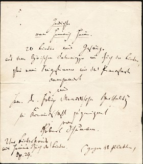

Heinrich Heine spielte selbst kein Musikinstrument. Da es nach seinem künstlerischen Verständnis aber keine strikten Grenzen zwischen verschiedenen Kunstformen gab, kommentierte er als Journalist bzw. Kritiker immer wieder auch musikalische Aufführungen und Werke seiner Zeit. Darunter befanden sich auch internationale Musiker wie Giacomo Meyerbeer, Franz Liszt, Robert Schumann und Richard Wagner.
Von Niklas Sternemann